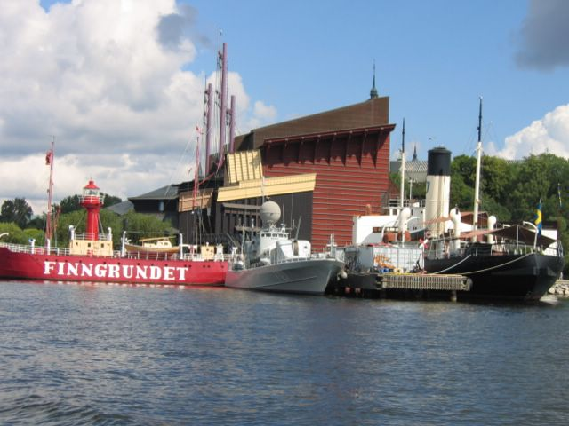

First |
Previous Picture |
Next Picture |
Last |
------------------------------ |
PICTURES HOME |
BORIS HOME

The Vasa was the most modern ship, the pride of the
Swedish king in 1628. On its first journey it keeled over and sank in the
Stockholm harbor. It was not raised until 1961. It was pieced together like a
giant jigsaw. Almost all of what you see today is original. Well worth a
visit!
img_0475.jpgtest